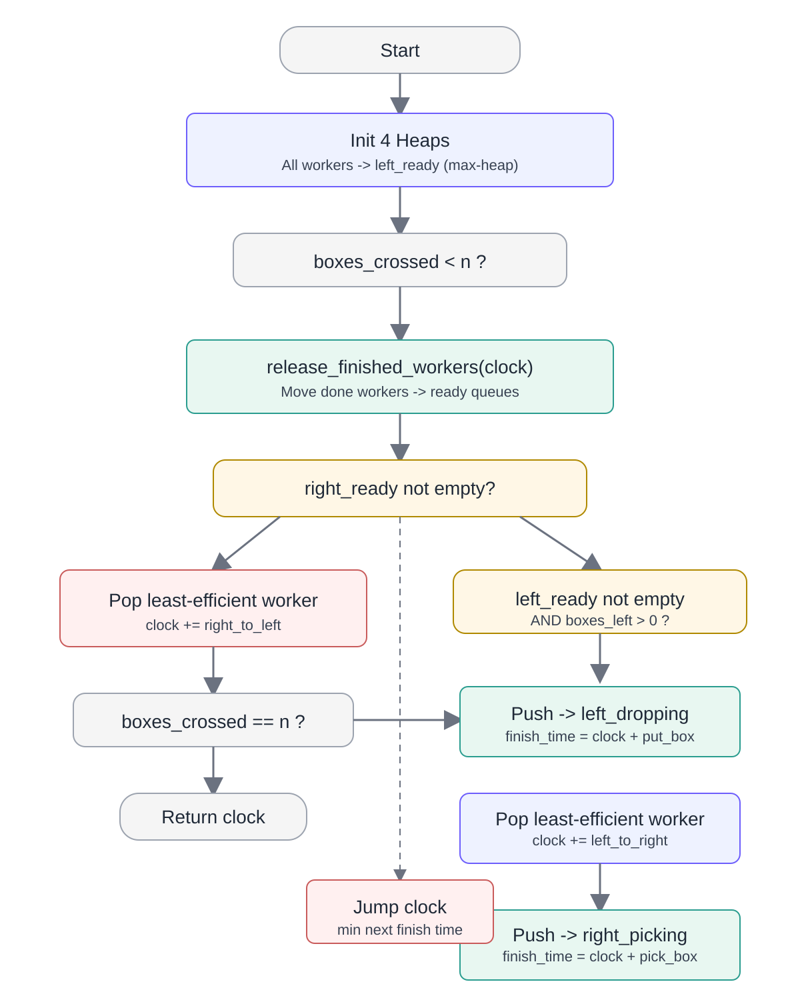

LeetCode 2532 (Time to Cross a Bridge) looks intimidating at first, but the problem becomes manageable once you model it as a queue-driven simulation.
The key insight is that this is not a graph problem and not a DP problem. It is an event simulation problem with strict priority rules.
Flowchart

Problem in Plain English
- There are
nboxes on the right side. - Workers start on the left side.
- Only one worker can be on the bridge at a time.
- Right-to-left crossing has higher priority than left-to-right crossing.
- On each side, choose the least efficient worker first:
inefficiency = left_to_right + right_to_left- if tied, larger index first.
Return the time when the last box reaches the left side.
The 4-Heap Model
I use four heaps to represent worker state:
left_side_worker_ready_q(max heap): workers waiting on left to cross.right_side_worker_ready_q(max heap): workers waiting on right to cross back with a box.right_side_workers_picking(min heap): workers currently picking a box on right.left_side_workers_dropping(min heap): workers currently dropping a box on left.
This maps directly to the worker lifecycle:
left_ready -> cross L->R -> right_picking -> right_ready -> cross R->L -> left_dropping -> left_ready
Download the Python File
Embedded Code (Core OO Solver)
@dataclass(frozen=True)
class Worker:
worker_id: int
left_to_right: int
pick_box: int
right_to_left: int
put_box: int
@property
def inefficiency(self) -> int:
return self.left_to_right + self.right_to_left
def finish_pick_at_right(self, now: int) -> int:
return now + self.pick_box
def finish_put_at_left(self, now: int) -> int:
return now + self.put_box
def findCrossingTime_oo(n: int, k: int, time: List[List[int]]) -> int:
assert k == len(time)
workers = [
Worker(i, row[0], row[1], row[2], row[3])
for i, row in enumerate(time)
]
boxes_crossed_to_left, clock = 0, 0
boxes_left_to_assign = n
left_side_worker_ready_q = MaxHeapt()
right_side_worker_ready_q = MaxHeapt()
left_side_workers_dropping = MinHeapt()
right_side_workers_picking = MinHeapt()
for worker in workers:
left_side_worker_ready_q.push(worker.inefficiency, worker.worker_id)
def release_finished_workers(now: int) -> None:
while left_side_workers_dropping and left_side_workers_dropping.peek()[0] <= now:
_, worker_id = left_side_workers_dropping.pop()
left_side_worker_ready_q.push(workers[worker_id].inefficiency, worker_id)
while right_side_workers_picking and right_side_workers_picking.peek()[0] <= now:
_, worker_id = right_side_workers_picking.pop()
right_side_worker_ready_q.push(workers[worker_id].inefficiency, worker_id)
while boxes_crossed_to_left < n:
release_finished_workers(clock)
if right_side_worker_ready_q:
_, worker_id = right_side_worker_ready_q.pop()
worker = workers[worker_id]
clock += worker.right_to_left
boxes_crossed_to_left += 1
if boxes_crossed_to_left == n:
return clock
left_side_workers_dropping.push(worker.finish_put_at_left(clock), worker_id)
continue
if boxes_left_to_assign > 0 and left_side_worker_ready_q:
_, worker_id = left_side_worker_ready_q.pop()
worker = workers[worker_id]
clock += worker.left_to_right
boxes_left_to_assign -= 1
right_side_workers_picking.push(worker.finish_pick_at_right(clock), worker_id)
continue
clock = min(
left_side_workers_dropping.peek()[0] if left_side_workers_dropping else float("inf"),
right_side_workers_picking.peek()[0] if right_side_workers_picking else float("inf"),
)
return clock
Complexity
- Time:
O((n + k) log k) - Space:
O(k)